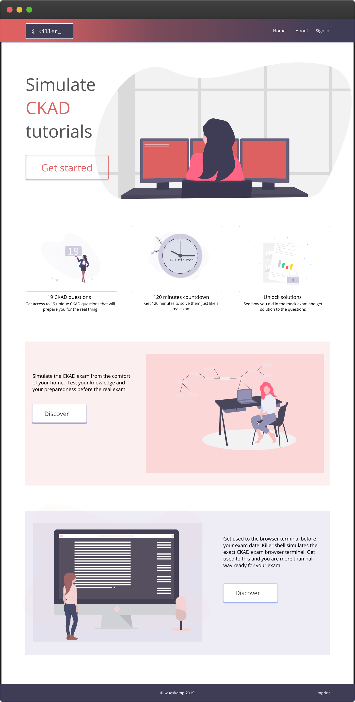
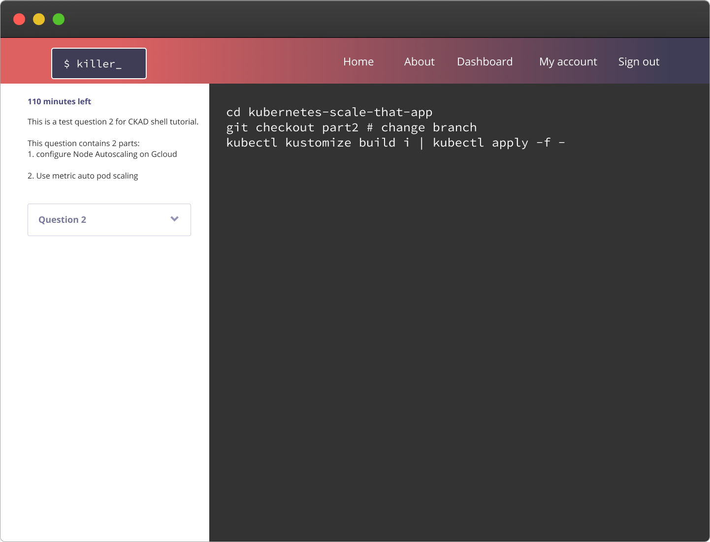

Killer Shell
Designing a mock exam simulator for Kubernetes programmers

Summary: This is a project designed for a client who wanted to simulate CKAD exam and other programming related certificates so that programmers taking these courses can have a playground before they go in for their exam.
Role: UX design, brand design & frontend development
Period: August 2019
Target audience: Kubernetes programmers who wants to take certficate exams

Process: To design this solution, I went through a series of steps to get the job done:
- Research - Inquiry: I took the day off and sat down with client to understand his aim for the project and what the business solution he was offering was. Since the client is also the backend developer/architect of the site and also a CKAD certificate holder - he served as the focus of both business, technical, and user research. Hence, I asked asked technical questions - the technical possibilities and limitations; user focused questions like his experience writing and preparing for such an exam and business questions like his expectations of the web application from revenue point of view.
- Sketching: BAfter understanding the scope of the project, from both business, user and technical point of view, I sketched out ideas of possible solutions.
- Validating ideas: After sketching, I had a session with the client, where he validated some assuptions conveyed in the sketch or discarded some. Sketching was repeated till we reached a consensus.
- Hi-fi Prototype: With the ideas properly validated, I went to work to come up with the hi-fi prototype. This gave the client the look and feel of the application and what the experience could be like when it's done.
- Guerilla testing: Because of the small size of the team, it was flexible enough to conduct guerilla testing almost at every stage of conception with our target audience to check if our assumptions and solutions were still right.
Outcomes and lessons: The client was extremely pleased with the outcome. The project is in beta. You can access the product here